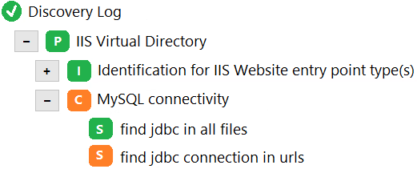
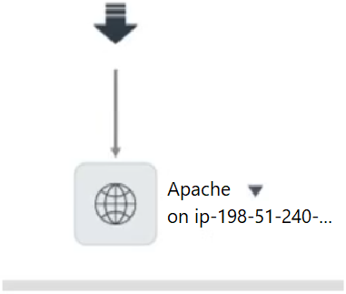

Answers verified with AI using ServiceNow documentation. Exercise your own judgement.
Question 1
Which of the following represents the skills needed that a Service Mapping administrator or implementer should have? (Choose four.)
A. Understanding of XML, Regex, Delimited text, and JSON
B. Understanding of protocols such as HTTP, TCP, SNMP, SOAP, and REST
C. Scripting capabilities with respect to Unix and Windows commands
D. Intermediate or above Windows and Unix administration skills
E. Sufficient skills to build an enterprise web site
F. Understanding of relational database theory
Question 2
Which one of the following ServiceNow application KPIs would improve most as a direct result of having visibility to a service map created through Service Mapping?
A. Problem Management: Number of Incidents per Known Problem
B. Incident Management: Mean Time to Resolve
C. Event Management: Signal to Noise Ratio
D. Change Management: Number of Major Changes
Question 3
How many ServiceNow instances can one MID Server connect to?
A. 1
B. 5
C. Up to 255
D. Unlimited
Question 4
When a Windows Server is reclassified from the Server [cmdb_ci_server] table to the Windows Server [cmdb_ci_win_server] table, which one of the following describes the process that occurred?
A. Class Change
B. Class Upgrade
C. Class Switch
D. Class Downgrade
Question 5
To begin the configuration of tag-based services, tag values must be defined where?
A. Tag categories
B. Tag catalogs
C. Tag-based service families
D. Tag libraries
Question 6
Which of the following are potential benefits when implementing Service Mapping? (Choose four.)
A. Reduced ongoing service map maintenance effort as a result of automated map updates
B. Faster service issue resolution and reduced downtime due to better root cause analysis
C. Improved Software Asset Management capabilities
D. Reduction in effort to create service maps
E. Reduction in change related incidents due to improved service visibility during change planning
F. More accurate alerts from monitoring tools
Question 7
Which one of the following can be used to enable patterns to search for additional attributes and modify discovery logic defined in an Identification Section without modifying the baseline pattern and potentially impacting upgrades?
A. Add step(s) to the pattern’s Identification Section.
B. Add step(s) to the pattern’s Connection Section.
C. Add step(s) to the pattern’s Extension Section.
D. Add step(s) to the pattern’s Update Set.
E. Add step(s) directly to the NDL code.
Question 8
In the image, which one of the following best describes the lower icons?
A. The connections from HAProxy are to other CIs that had errors during discovery.
B. The connections from HAProxy are application clusters.
C. The connections from HAProxy could not be identified and are marked as a Generic Application.
D. The connections from HAProxy are marked as boundaries.
Question 9
Assuming Reconciliation Rules (Reconciliation Definitions) were configured exactly the same for both Data Sources, ServiceNow and ServiceWatch, for the Application [cmdb_ci_appl] table and the following Data Source Precedence Rules are configured. Which one of the following is true?
A. If an Application CI is discovered with a Data Source, ServiceNow, then if the same Application CI is discovered by the Data Source, Altiris, an update will be allowed.
B. If an Application CI is discovered with a Data Source, ServiceWatch, then if the same Application CI is discovered by the Data Source, ServiceNow, an update will be allowed.
C. If an Application CI is discovered with a Data Source, ServiceNow, then if the same Application CI is discovered by the Data Source, ServiceWatch, an update will be allowed.
D. If an Application CI is discovered with a Data Source, ServiceWatch, then if the same Application CI is discovered by the Data Source, Altiris, an update will be allowed.
Question 10
Service Mapping provides visibility to the Operator in Agent Workspace without leaving the Workspace UI. This visibility includes what items associated with the CI? (Choose two.)
A. Releases
B. Problems
C. Incidents
D. Alerts
Question 11
In ServiceNow Discovery, which one of the following phases is the server RAM value discovered?
A. Port scan
B. Classification
C. Classification and Identification
D. Identification and Exploration
Question 12
In Pattern Designer, which one of the following best describes the Create Connection step?
A. Provides information about integrations to the host
B. Provides information about relationships between cluster members
C. Provides information about outbound connections to other CIs
D. Provides information about relationships between the host and installed software
Question 13
Which one of the following best describes the definition of an Entry Point?
A. A method by which a user interacts with a service or a CI interacts with another CI
B. A type of communication taking place between applications
C. A template of attributes that define a communication type between applications
D. A Host::Hosted on relation between CIs
Question 14
In Service Mapping, when discovery is started, what is the execution strategy used to run Identification Sections?
A. Identification Sections are executed randomly until one is successful and if more than one section is successful an error will be displayed.
B. Identification Sections are executed randomly and the data gathered by the successful sections are merged.
C. Identification Sections are executed one by one in the order they are listed and the last section that is successful will be used.
D. Identification Sections are executed one by one in the order they are listed until the first successful match which concludes the Identification phase.
Question 15
Which one of the following Linux commands can be used by a non root user to return the process ID listening on port 8080?
A. sudo netstat -an -p TCP | grep :8080
B. sudo netstat -anp | grep :8080
C. netstat -anp | grep :8080
D. netstat -an -pid * | grep :8080
Question 16
Which one of the following best describes the process that Service Mapping uses to run a command on a target device?
A. Service Mapping provides a task with the command that the MID Server collects, the MID Server executes the command on the target device, and returns the result to the ServiceNow instance in an XML payload.
B. The MID Server decides what command to execute, executes the command on the target device, and returns the result to the ServiceNow instance in an XML payload.
C. Service Mapping sends a request to the target device to execute a command, and the target device returns the result to the ServiceNow instance through the MID Server.
D. Service Mapping sends a request to the target device to execute a command, and the target device returns the result to the ServiceNow instance.
Question 17
In Event Management, which of the following rules allows for automatic task creation?
A. Alert Management
B. Event
C. Task
D. Alert Correlation
Question 18
During ServiceNow Discovery, which one of the following is the approximate number of host IPs that are port scanned with a Discovery Schedule configured with an IP network as shown? 180.181.0.0/16
A. ~5 million
B. ~1 million
C. ~65 thousand
D. ~500,000 thousand
Question 19
ServiceNow only needs Domain user with local admin rights to discover Windows hosts as part of a successful implementation of ServiceNow Discovery, however which of the following targets will not be discovered?
A. Windows Active Directory Servers
B. Windows DHCP Servers
C. Windows Domain Controller Servers
D. Windows DNS Servers
Question 20
Which one of the following is true for variables defined in an Identification Section?
A. Identification Section variables can also be used in all other Identification Sections in any pattern.
B. Identification Section variables can also be used in Parent CI Types.
C. Identification Section variables can also be used in all other Identification Sections in the same pattern.
D. Identification Section variables can also be used in Connection Sections for any pattern.
E. Identification Section variables can also be used in Connection Sections for the same pattern.
Question 21
Which one of the following statements best explains the following URL: https:///SaCmdManager.do?ip=198.51.100.66?
A. The user is starting the Command Line Console and is able to send commands to the host 198.51.100.66.
B. The user is starting the Command Line Console and explicitly directs Service Mapping to use the MID Server 198.51.100.66 to execute commands.
C. This is not a valid URL for Service Mapping.
D. The user is starting the Command Line Console and is able to send commands against the ServiceNow instance at 198.51.100.66.
Question 22
In Service Mapping, which one of the following is true if a target host is already discovered and in the CMDB?
A. The host will be deleted in the CMDB and a new host record will be created during Service Mapping discovery.
B. The host will be immediately rediscovered, but only the changes will be updated in the CMDB during Service Mapping discovery.
C. The host will be immediately rediscovered and updated in the CMDB during Service Mapping discovery.
D. The host will not be rediscovered during Service Mapping discovery.
Question 23
In Service Mapping, when discovery is started, what is the execution strategy used to run Connection Sections?
A. Connection Sections are executed one by one and connections will result from each successful section.
B. Connection Sections are executed randomly and connections will result from each successful section.
C. Connection Sections are executed one by one in the order they are listed until the first successful section.
D. Connection Sections are executed one by one in the order they are listed with a connection created from the last successful section.
Question 24
Which one of the following is a public IP Address?
A. 172.20.5.9
B. 225.16.0.5
C. 192.168.100.100
D. 10.0.6.8
Question 25
Given the CMDB class structure shown, which types of Configuration Items (CIs) will be included in a report run against the Server [cmdb_ci_server] table?
A. CIs defined directly in Server [cmdb_ci_server] table and all parent classes
B. CIs defined directly in Server [cmdb_ci_server] table and all child classes
C. CIs defined directly in the Server [cmdb_ci_server] table
Question 26
Which one of the following best represents the output from the following Regular Expression? ([\w\d\-\.]+)
A. Match a single character in the list between one and unlimited times.
B. Match a single character in the list one time.
C. Match a single character in the list between one and three times.
D. Match a single character in the list between one and ten times.
Question 27
Which one of the following describes how a MID Server communicates with a ServiceNow instance?
A. Initiates on HTTPS
B. Responds on HTTPS
C. Responds on HTTP
D. Initiates on HTTP
Question 28
Assuming the Apache Web Server Identification Rule (CI Identifier) is configured as shown with the following Criterion attributes:
Class -
Configuration file -
Version -
Yesterday, an Apache Web Server CI was discovered as part of Service Mapping. Today, the application owner upgraded the Apache Web Server to a different version and reran discovery of the service. What will happen in the CMDB?
A. A duplication error will occur.
B. A new Apache Web Server CI is created.
C. The existing Apache Web Server CI will be reconciled with the upgraded Apache Web Server CI and its version will be updated.
D. The Apache Web Server CI will be reclassified as a Web Server CI.
Question 29
Within the CMDB, all application CI Types/Classes are children of which parent class?
A. Database Instance [cmdb_ci_db_instance]
B. Software [cmdb_ci_software]
C. Installed Software [cmdb_ci_installed_software]
D. Application [cmdb_ci_appl]
E. Licenses [cmdb_ci_license]
Question 30
In Service Mapping, which one of the following best describes the process of discovery after an Entry Point is configured?
A. For each pattern that supports the Entry Point Type, run identification Sections until one finishes successfully and then run each Connection Section for the pattern.
B. For each pattern that supports the Entry Point Type, run all the identification Sections that finish successfully and then run each Connection Section for the pattern.
C. For each pattern that supports the Entry Point Type, run identification Sections until one finishes successfully and then run Connection Sections until one finishes successfully.
D. For each pattern that supports the Entry Point Type, run all the Identification Sections and run all Connection Sections.
Question 31
When using the Pattern Designer, a Regular Expression parsing strategy is available from which operation?
A. Set variable
B. Match
C. Create connection
D. Parse file
Question 32
Using Pattern Designer, which one of the following Delimited Text Parsing Strategies could be used to parse CO from the string? Location,Denver,CO
A. Delimiter of a comma and position 3
B. Delimiter of Location, and position 2
C. Delimiter of Denver and position 2
D. Delimiter of a comma and position 2
Question 33
In Event Management, if a Message key is not passed from an Event, which of the following Alert fields combine to populate the Message key on an Alert?
A. Task, Description, Created
B. Node, Type, Resource, Number
C. Source, Number, Task
D. Source, Node, Type, Resource
Question 34
In Service Mapping, when an application is identified as a Generic application, which one of the following is the cause?
A. No Pattern Identification Section matches
B. No Pattern Identification and Connection Section matches
C. No Identification Rule exists
D. No Pattern Connection Section matches
Question 35
Which address is required for Service Mapping to discover a Load Balancer that does not previously exist in the CMDB?
A. Management IP address
B. MAC address
C. Public IP address
D. MIB address
Question 36
Which one of the following Regular Expressions could be used to parse the value 5.2.0 from the string? Version 5.2.0
A. Version (\.*)
B. Version\s+(\d+\.\d+\.\d+)
C. Version (\d+)
D. Version (\d+).(\d+).(\d+)
Question 37
Which of the following reasons would a prospect consider purchasing ServiceNow Event Management? (Choose three.)
A. Determine impacted services from a given event/alert.
B. Provide software deployment capabilities to patch problem infrastructure.
C. Automatically generate incidents for certain classes of alerts.
D. Provide state of the art monitoring capabilities across a wide array of different types of infrastructure.
E. Consolidate events from disparate monitoring tools into a consolidated central system.
Question 38
When running Service Mapping discovery, which of the following represents the root cause of the error? “Failed to access target system. Access is denied”
A. SSO authentication error
B. CLI permissions error
C. Applicative permissions error
D. Windows authentication error
Question 39
Which one of the following ECC Queue records contains the XML payload returned from the MID Server that will be processed by the ServiceNow instance?
A. Input, Pending
B. Input, Ready
C. Output, Pending
D. Output, Ready
Question 40
Assume an Apache Web Server Identifier Entry is configured as shown:
If the Apache Web Server Discovery Pattern has a step configured to collect the Configuration file data but NOT configured with a step to collect the Version information, what will happen when executing a Service Mapping discovery?
A. An identification error will occur.
B. The Apache Web Server CI will be reclassified as a Web Server CI.
C. The Apache Web Server configuration item will be discovered successfully and either inserted or updated in the CMDB.
D. A duplication error will occur.
Question 41
Which one of the following describes when the MID Server config.xml file is read and used?
A. Config.xml file updated and saved
B. Config.xml file created and saved
C. MID Server application stop
D. MID Server application start
Question 42
In Service Mapping, which one of the following must be available or created in advance, in order to be able to create a Discovery Pattern?
A. Process Classifier
B. Identification Rule
C. CI Type/Table
D. Application Service
Question 43
Which one of the following is a valid format when entering SSH Private Key credentials?
A. PEM
B. PGP
C. PDP
D. PMI
Question 44
Which one of the following best describes what will happen if Discovery is configured with 3 MID Servers in a Load Balance Cluster with Shazzam cluster support disabled?
A. All three MID Servers will be used during the Port Scan phase and all three will be used during the classification phase.
B. Only one MID Server will be used during the Identification phase and all three will be used during the exploration phase.
C. Only one MID Server will be used during the Port Scan phase and all three will be used during the classification phase.
D. All three MID Server will be used during the Identification phase and only one will be used during the exploration phase.
Question 45

In the following image of the Discovery Log, the green S represents which one of the following?
A. A library in the Connection Section of a pattern
B. A step in the Connection Section of a pattern
C. A step in an Identification Section of a pattern
D. A library in an Identification Section of a pattern
Question 46
In Service Mapping, which one of the following icons represents a credential error on the Service map?
A. Yellow triangle
B. Generic application
C. Question mark
D. Red stop sign
Question 47
Which of the following are methods used to initiate discovery on a service? (Choose three.)
A. Map multiple services suggested by Service Mapping by discovering the load balancers in an enterprise.
B. Map multiple services by importing entry points from a CSV file.
C. Map a single service defined by configuring an entry point.
D. Map services suggested by the discovery of MID Servers in an enterprise.
E. Map services based on Assets stored in the CMDB.
Question 48
In Service Mapping, which one of the following can be useful in determining which Patterns, Identification Sections, Connection Sections, and Steps are tried?
A. Workflow Log
B. Discovery Log
C. System Log
D. ECC Log
Question 49
Which one of the following represents what the MID stands for in MID Server?
A. Monitoring, Integration, and Discovery
B. Management, Integration, and Discovery
C. Management, Instrumentation, and Discovery
D. Monitoring, Instrumentation, and Discovery
E. MID is not an acronym.
Question 50
Which one of the following is the most common risk that can negatively impact a Service Mapping engagement?
A. The customer external firewall does not meet the requirements needed for the Service Mapping MID Server to communicate with their ServiceNow Instance.
B. MID server resource requirements are beyond capacity of the customer.
C. Customer security team is not made aware early enough in the engagement of the credential requirements.
D. Customer is not using Active Directory for credential authentication.
Question 51
A defined relationship between two Configuration Items (CIs), such as Runs on, Depends On, or Contains is called a what?
A. CI Attribute
B. Application to Application Relationship
C. Relationship Type
D. CI Dependency
Question 52
Which of the following are benefits a service map can bring during an Incident resolution? (Choose three.)
A. Quickly identifies any recent incidents that occurred on components of the impacted service.
B. Narrows down possible affected components when a service is impacted.
C. Helps reduce the number of unplanned changes in a customer environment.
D. Helps pinpoint code errors after a faulty application is identified.
E. Quickly identifies any recent changes performed on components of the impacted service.
Question 53
Which one of the following in the CMDB Identification and Reconciliation application allows a CMDB administrator to specify authorized data sources that can update a CMDB table or a set of table attributes?
A. Reclassification Tasks
B. Identification Rules
C. Datasource Precedence Rules
D. Reconciliation Rules
Question 54

You have run Service Mapping discovery against a customer service and discovered the CI in the image. The customer indicates that Apache should have an outgoing connection to Tomcat. Which one of the following could be the issue?
A. No Connection Section is defined for Apache to Tomcat.
B. Process is offline for Tomcat.
C. No Tomcat CI Type is defined.
D. No Identification Rule is defined for Tomcat.
E. Credentials are not configured for Tomcat.
Question 55
After discovering load balancers in a customer environment, service candidates may appear on the Service Mapping Home page under which one of the following tiles?
A. Map
B. Fix
C. Approve
D. Completed
E. Review
Question 56
Which one of the following best represents the breadth of types of Configuration Items (CIs) discovered by running Service Mapping?
A. Hardware, Installed Software, Network Gear
B. Physical Components, Logical Components, Certificates
C. Applications, Licenses, IP Addresses
D. Cloud Services, Applications, CI Relationships
E. Hardware, Licenses, CI Relationships
Question 57
When building a Discovery Pattern, which one of the following operations results in a termination of the Identification or Connection Section if a condition is not met?
A. Set Parameter Value
B. Merge Table
C. Filter Table
D. Match
Question 58
Which of the following are created automatically when using the map option Create pattern from generic application?
A. Discovery Pattern, CI Type/Class, Process Classifier
B. CI Type/Class, Process Classifier, Identification Rule
C. Process Classifier, Connection Section, Discovery Pattern
D. Identification Rule, CI Class/Class, Identification Section
Question 59
When using a Delimited Text Parsing Strategy, what delimiter and position will parse 2014 from the string? 2014/02/07-17:49:36
A. Delimiter of space and position 1
B. Delimiter of / and position 0
C. Delimiter of / and position of 1
D. Delimiter of 2014 and position 1
Question 60
In Service Mapping, which one of the following best describes the process of discovery after an Entry Point is configured?
A. For each pattern that supports the Entry Point Type, run all the Identification Sections and run all Extension Sections.
B. For each pattern that supports the Entry Point Type, run Identification Sections until one finishes successfully and then run all Extension Sections for the pattern.
C. For each pattern that supports the Entry Point Type, run all the Identification Sections that finish successfully and then run each Extension Section for the pattern.
D. For each pattern that supports the Entry Point Type, run Identification Sections until one finishes successfully and then run Extensions Sections until one finishes successfully.
Question 61
Universal Containers’ (UC) innovative apps division is releasing an application which can be installed in their trading partners’ Salesforce environments. The application allows the trading partners to book containers from UC directly without leaving their own Salesforce environment. The partners can then build on top of the application with process builders and triggers so the container booking process can be integrated with the trading partners’ own processes. What is the recommended mechanism for releasing the application?
A. Change Sets
B. Managed Package
C. Unmanaged Package
D. Zip file deployable by Force.com Migration Tool
Question 62
In Service Mapping, which icon represents a credential error on the Service map?
A. Yellow triangle
B. Yellow circle
C. Red circle
D. Red triangle
Question 63
Universal Containers (UC) has a huge volume of metadata that cannot be deployed at once. What is the recommended strategy for UC to be successful with the deployment?
A. Sort and group the metadata alphabetically and deploy them in the same order.
B. Use a combination of the Ant migration tool and change sets for deployment.
C. Identify metadata dependencies, create logical groupings, and deploy in the right order.
D. Use a continuous integration tool such as Jenkins to deploy the metadata.
Question 64
Universal Containers is planning to release simple configuration changes and enhancements to their Sales Cloud. A Technical Architect recommended using change sets. Which two advantages would change sets provide in this scenario? (Choose two.)
A. The ability to deploy a very large number of components easily.
B. An easy way to deploy related components.
C. A simple and declarative method for deployment.
D. The ability to track changes to components.
Question 65
Universal Containers (UC) is about to begin development work on a new project in their Salesforce org that will take many months to complete. UC is concerned about how critical bugs will be addressed for existing live functionality. What is the recommended release management strategy to address this concern?
A. Include fixes for critical bugs in the ongoing Development sandboxes so that they will be released with the other code.
B. Keep teams separate until the end of the project and create a Full Copy sandbox to merge their work then.
C. Utilize a dedicated developer pro sandbox to address critical bugs and release to production.
D. Address critical bugs in the Development sandboxes and push those changes to production separately.
Question 66
Universal Containers has multiple minor and major releases in a year. Minor releases have simple configuration changes, while major releases involve a large number of complex code components. What deployment tools should an Architect recommend for both types of releases?
A. Force.com IDE for minor releases and metadata API for major releases.
B. Change sets for both minor releases and major releases.
C. Change sets for minor releases and Force.com IDE for major releases.
D. Change sets for minor releases and metadata API for major releases.
Question 67
Universal Containers (UC) works with different partners and has few admin resources that take care of the day-to-day deployment tasks. As a result, UC would like to find a way to automate the deployments using Metadata API. Which two limitations of Metadata API should be considered when using Metadata API-based deployments? (Choose two.)
A. Maximum size of deployed .zip file is 39 M
B. Deploy and retrieve up to 10,000 files at once.
C. Deploy up to 10,000 files, but retrieve more than 10,000 files.
D. Maximum size of deployed .zip file is 400 M
Question 68
Universal Containers (UC) has received feedback from the field on several new feature requests that are aligned with key business goals. UC is looking for a way to quickly get feedback and prioritize these requests. Which two options should an Architect recommend? (Choose two.)
A. Create design standards around the new features being requested.
B. Send the requests to IT for a formal review at the end of the year.
C. Bring the feature request to the Test Manager to gain quality checks.
D. Present the feature requests at a Center of Excellence meeting.
E. Create a backlog or priority list in a project management tool.
Question 69
Universal Containers is starting a Center of Excellence (CoE). Which two user groups should an Architect recommend to join the CoE? (Choose two.)
A. Inside Sales Users
B. Call Center Agents
C. Executive Sponsors
D. Program Team
Question 70
Universal Containers has multiple project teams building into a single org. The project teams are concerned with design conflicts and ensuring a common design process. What should an Architect recommend to prevent this conflict?
A. Create a Center of Excellence Charter document.
B. Create a Release Management process.
C. Create Design Standards for Governance.
D. Create a backup system using Git Repositories.
Question 71
Universal Containers has multiple projects being developed in parallel. One of the projects is in the testing phase, and the testing team found a list of issues on the items that will be deployed to production. As the project deadline is short, the customer team proposes that the fixes be done in the test sandbox and then deployed to Production. What should the Architect recommend?
A. Recommend fixing the issues in the test environment and migrating the changes to the development sandbox.
B. Recommend fixing the issues in the development sandbox, migrating them to testing, and deploy to production after testing.
C. Recommend fixing the issues in the development environment and deploying the changes to production.
D. Recommend the customer team’s proposal to fix the issues in the testing environment and deploy them to production.
Question 72
Universal Containers (UC) is implementing Service Cloud for their contact centers for 3,000 users. They have approximately 10 customers. The average page response time expected is less than 5 seconds with 1,500 concurrent users. What type of testing will help UC measure the page response time?
A. Unit Testing
B. System Integration Testing
C. Load Testing
D. Stress Testing
Question 73
Universal Containers has proposed using a Developer Edition org to stage changes to their Customer Community, which includes multiple custom Visualforce pages and components. Which three risks should a Technical Architect consider in this strategy? (Choose three.)
A. Developer Edition orgs CANNOT have sandboxes, which will make team development difficult.
B. Developer Edition orgs have limited user counts and low data volume limits, which will make User Testing difficult.
C. Code changes CANNOT be deployed from a Developer Sandbox to Production.
D. Developer Edition orgs do NOT run on production servers, and will NOT perform well during testing,
E. Change Sets CANNOT be used to deploy from Developer Edition to Production, which will make deployment more complex.
Question 74
Universal Containers (UC) is considering updating their Salesforce Release Management process. Which three best practices should UC consider for version control? (Choose three.)
A. Automation is a must with various application branches in the repository.
B. Maintain a single entry point for production from the master branch.
C. Maintain unrestricted access to the release sandboxes for all changes being deployed.
D. Maintain separate developer branches for minor and major releases.
E. Maintain a single repository for applications with individual branches for projects.
Question 75
Universal Containers has automated its deployment process using Metadata API. However, they found that Metadata API does not support all the components yet. What should be done to address this?
A. Deploy unsupported components manually before/after deployment.
B. Use AppExchange products to deploy unsupported components.
C. Use the Force.com IDE for deploying the unsupported components.
D. Use change sets for deploying all the unsupported components.
Question 76
Universal Containers has a stable continuous integration process and all stakeholders are happy. However, user testing takes a long time, as data has to be set up. What should an Architect do to address this problem?
A. Train business users to create test data more efficiently.
B. Advise the project manager to assign more users to create test data.
C. Include automated sample data during deployment.
D. Test data creation is outside the scope of continuous integration.
Question 77
Which two project situations favor a waterfall methodology? (Choose two.)
A. An application with many systems and inter-dependencies between components.
B. An application with regulatory compliance requirements to be validated by outside agencies.
C. An in-house application with a fixed team size, but an open timeline and flexible requirements.
D. An application in post-production, with incremental changes made by a small team.
Question 78
Universal Containers (UC) is using Sales and Service Cloud. They have two major releases and four minor releases every year. They have development (dev), integration, user acceptance (UAT), staging, and hotfix sandboxes.
A. Fix the issue in hotfix, test, and deploy to production.
B. Follow the release management process to move to production.
C. Fix the issue in staging and deploy it to production.
D. Fix the issue in development, test in UAT, and deploy to production.
Question 79
Universal Containers’ (UC) development team is using an Agile tool to track the status of build items, but only in terms of stages. UC is not able to track any effort estimates, log any hours worked, or keep track of remaining effort. For what reason should UC reconsider using the Agile tool for effort tracking?
A. Allows the management team to make critical timeline commitments based solely on developer estimates.
B. Allows the organization to track the Developers’ work hours for salary compensation purposes.
C. Allows the management team to manage the performance of bad developers who are slacking off.
D. Allows the Developer to compare their effort estimates and actuals to better adjust their future estimates.
Question 80
Universal Containers is replacing an old legacy system with Salesforce. Which two strategies should the plan consider to mitigate the risks associated with migrating data from the legacy system to Salesforce? (Choose two.)
A. Identify the data relevant to the new system, including dependencies, and develop a plan/scripts for verification of data integrity.
B. Migrate users in phases based on their function, requiring parallel use of legacy system and Salesforce for certain period of time.
C. Use a full sandbox environment for all the systems involved, a full deployment plan with test data generation scripts, and full testing including integrations.
D. Use a full sandbox environment and perform test runs of data migration scripts/processes with real data from the legacy system.
Question 81
Universal Containers has multiple project teams integrating Salesforce to various systems. Integration Architects are complaining about the various integration patterns used by the teams and lack a common understanding of the integration landscape. What should an Architect recommend to address the challenges?
A. Create design standards focused on integration and provide training to all teams.
B. Recommend an outbound message design pattern to be used for all teams.
C. Recommend a fire-and-forget design pattern to be used for all teams.
D. Implement a data governance policy and publish the documentation to all teams.
Question 82
Universal Containers (UC) is planning for a huge data migration from a homegrown on-premise system to Salesforce as part of their Service Cloud implementation. UC has approximately 5 million customers, 10 million contacts, and 30 million active cases. Which three key areas should be tested as part of Data Migration? (Choose three.)
A. Case assignment rules and escalation rules.
B. Data transformation against the source system.
C. Case association with correct Contact and Account.
D. Case Ownership, along with associated entitlement and milestones.
E. Page Layout assignment to the profiles.
Question 83
Universal Containers (UC) wants to shorten their deployment time to production by controlling which tests to run in production. UC's Architect has suggested that they run only subsets of tests. Which two statements are true regarding running specific tests during deployments? (Choose two.)
A. Specifying the test method is NOT supported in DeployOptions; therefore, specify only the test classes that are required to be executed.
B. To run a subset of tests, set the RunSpecifiedTests test level on the DeployOptions object and pass it as an argument to deploy() call.
C. To run a subset of tests, set the RunLocalTests test level on the DeployOptions object and pass it as an argument to deploy() call.
D. Specify both test classes and individual test methods that are required to be executed, as both are supported in DeployOptions.
Question 84
Which are two key benefits of fully integrating an Agile issue tracker with software testing and continuous integration tools? (Choose two.)
A. Developers can observe their team velocity on the burn chart report in the Agile tool.
B. Developers can collaborate and communicate effectively on specific user stories.
C. Developers can see automated test statuses post code-commit on a specific user story.
D. Developers can see the committed code’s build status directly on the user story record.
Question 85
Universal Containers (UC) is implementing a governance framework and has asked the Architect to make recommendations regarding release planning. Which two decisions should the Architect make when planning for releases? (Choose two.)
A. How to roll back to the previous Salesforce release if there are issues.
B. How to test existing functionality to ensure no regressions are introduced.
C. When to test a new UC feature release on a preview sandbox.
D. Whether Salesforce will wait to upgrade the pod until after a UC release is complete.
Question 86
Universal Containers (UC) has two major releases every year and the team always runs into longer deployment times. In which two ways can UC reduce deployment time? (Choose two.)
A. Validate the deployment before migrating components to Production.
B. Deploy components in groups to reduce deployment time.
C. Use recent deployment validations and the quick-deploy feature.
D. Specify the tests to run by using the RunSpecifiedTests test level.
Question 87
Universal Containers (UC) is implementing Service Cloud. UC's contact center receives 100 phone calls per hour and operates across North America, Europe, and APAC regions. UC wants the application to be responsive and scalable to support 150 calls, considering future growth. What should be a recommended test load consideration?
A. Testing load considering current call volume.
B. Testing load considering half the call volume.
C. Testing load considering 10x the current call volume.
D. Testing load considering 50% more call volume.
Question 88
Universal Containers (UC) has used Salesforce for the last 6 years with 50% custom code. UC has recently implemented continuous integration. UC wants to improve old test classes whenever new functionality invalidates tests. UC also wants to reduce the deployment time required. What should an Architect recommend?
A. Do NOT execute test classes in sandboxes and all test classes in Production.
B. Test classes CANNOT be executed in sandboxes.
C. Execute all test classes in sandboxes and selected test classes in Production.
D. Do NOT execute ail test classes in sandboxes and Production.
Question 89
Universal Containers has just initiated a project to implement a partner community. The application will be deployed into a production environment currently in use by a large Salesforce user base. The project manager has insisted that the development and testing team use a single developer sandbox. What is the risk with this approach?
A. Testers will experience functional changes throughout testing due to NOT having isolation from development.
B. Refreshing the developer sandbox will take significant time.
C. Testers will encounter platform limits due to developer sandbox capacity limits.
D. Testers will hit governor limits due to the large volume of users in the developer sandbox.
Question 90
Universal Containers’ (UC) deployment of Salesforce customizations has increased over time, leading to complexities. UC is finding too many bugs in the deployed code, which has become a challenge to the delivery team. The team wants to reduce the amount of bugs by ensuring all the developed code is reviewed, tested, and validated in the upstream deployment process. Which three development practices will be best suited to address UC’s concerns? (Choose three.)
A. Encourage the development team to be self-organizing.
B. Enable developer teams to do peer code review.
C. Incorporate test-driven development into the project structure.
D. Use continuous integration with automated testing.
E. Enable a short and timely feedback loop with customers.
Question 91
Universal Containers is considering developing a client application using the Metadata API for managing deployments to multiple Salesforce organizations. Which two use cases describe the usage of Metadata API? (Choose two.)
A. Perform CRUD operations to manage records in the organization.
B. Migrate data changes between two organizations using a csv file.
C. Export current customizations in the organization as an xml file.
D. Migrate configuration changes between two organizations.
Question 92
Universal Containers has recently replaced a custom service center application with Salesforce Service Cloud. Administrators are now confused about which fields and classes are actively being utilized and how future implementations can be maintained. Which two options should an Architect recommend? (Choose two.)
A. Create a governance process requiring all projects to create project deliverable documentation.
B. Create a standard method for deprecating classes and fields using design standards.
C. Create a governance framework focused on high-level business strategy and goals.
D. Create a design standard requiring integration to use declarative configuration patterns.
E. Create an adoption plan for end users using Salesforce dashboards and reports.
Question 93
Universal Containers wants to implement a release strategy with major releases every four weeks and minor releases every week. Major releases follow Development, System Integrated Testing (SIT), User Acceptance Testing (UAT) and Training. Minor releases follow Development and UAT stages. What represents a valid environment strategy consideration for UAT?
A. Minor releases use Partial copy and Major releases use Full copy.
B. Minor releases use Developer and Major releases use Full copy.
C. Minor and Major releases use the same Full copy.
D. Minor and Major releases use separate Developer pro.
Question 94
There has been an increase in the number of defects. Universal Containers (UC) found the root cause to be decreased quality of code. Which two options can enforce code quality in UC's continuous integration process? (Choose two.)
A. Introduce manual code review before deployment to the production org.
B. Increase the size of the testing team assigned to the project.
C. Introduce static code analysis before deployment to the testing sandbox.
D. Introduce manual code review before deployment to the testing sandbox.
Question 95
A Salesforce Administrator has initiated a deployment using a change set. The deployment has taken more time than usual. What is a potential reason for this?
A. The change set includes changes to permission sets and profiles.
B. The change set includes new custom objects and custom fields.
C. The change set performance is independent of included components.
D. The change set includes field type changes for some objects.
Question 96
Universal Containers has just completed several projects, including new custom objects and custom fields. Administrators are having difficulty maintaining the application due to not knowing how objects and fields are being used. Which two options should an Architect recommend? (Choose two.)
A. Create design standards with a document to store all custom objects and custom fields.
B. Create design standards to require all custom fields on all custom object page layouts.
C. Create design standards to require help text on all custom fields and custom objects.
D. Create design standards to consistently use the description field on custom fields.
E. Create design standards to consistently use the description field on custom objects.
Question 97
Universal Containers (UC) is planning for a huge data migration as part of their Service Cloud Implementation. UC has approximately 15 million customers, 30 million contacts, and 30 million active cases. Which two key areas of UC's data migration test plan should be included? (Choose two.)
A. APIs to be used for data migration
B. Target Salesforce Server and Source system IP address
C. Manual and Automated data validation approaches
D. Success criteria for data migration
Question 98
Universal Containers (UC) operates globally from different geographical locations. UC is revisiting their current org strategy. Which three factors should an Architect consider for a single org strategy? (Choose three.)
A. Consistent processes across the business
B. Centralized data location
C. Increased ability to collaborate
D. Fewer interdependencies
E. Tailored implementation
Question 99
Due to several issues, Universal Containers wants to have better control over the changes made in the production org and to be able to track them. Which two options will streamline the process? (Choose two.)
A. Make all code/configuration changes directly in the production org.
B. Use the Force.com IDE to automate deployment to the production org.
C. Use Metadata API to automate deployment to the production org.
D. Allow no code/configuration changes directly in the production org.
Question 100
Universal Containers has development teams working on multiple projects. They are exploring a source control tool to track and manage their code/configuration. Which two benefits does a source control tool provide? (Choose two.)
A. Provides automated code/configuration deployments.
B. Provides the ability for distributed teams to work in isolation.
C. Provides the ability to back up code/configuration changes.
D. Provides the ability to automatically identify issues in code/configuration.
Question 101
Universal Containers (UC) has three types of releases in their release management strategy: daily, minor (monthly), and major (quarterly). UC is releasing a new Service Cloud implementation to a large support center, which will require lengthy training and change management. The implementation has dependencies on the existing Salesforce Sales Cloud implemental. What release strategy would an Architect recommend?
A. Utilize the minor release process to create and test in production, bypassing the full sandbox.
B. Utilize the daily release process and deploy directly to production, bypassing the full sandbox.
C. Utilize the daily release process to create and test in a full sandbox and then deploy to production.
D. Utilize the major release process to create and test in a full sandbox and then deploy to production.
Question 102
Universal Containers (UC) is working on a major project and has determined that its approach to a certain feature will no longer work with an upcoming Salesforce platform release (e.g., Winter to Spring). What should a Technical Architect recommend to address this issue?
A. Submit a request to Salesforce to enable the ‘delay upgrade’ feature in their org. Have the UC administrator schedule the upgrade for a later date.
B. Continue with the current approach since Salesforce will rectify the issue prior to updating the production environment to the new platform release.
C. Determine the developer sandbox upgrade schedule, and have the developer refactor the approach to the feature in the upgraded sandbox.
D. Continue development in a non-upgraded sandbox, and have the developer update the API version of the code to the upcoming API version for testing purposes.
Question 103
Universal Containers (UC) has been following the Waterfall methodology to deliver customer apps in Salesforce. As the business is growing rapidly, and with demand to incorporate features and functionality at a faster pace, UC is finding the Waterfall approach is not an optimal process, and intends to transition towards an Agile development methodology. Which are two strengths of using an Agile development methodology? (Choose two.)
A. The project requirements in later phases are expected and accommodated by the process, by design.
B. Careful documentation is done at each step of the process so a large body of knowledge is available for inspection.
C. All elements of the build are fully understood before work begins, reducing risk of unpleasant surprises.
D. There are many small releases of functional code, allowing stakeholders to see and touch the work in progress.
Question 104
Universal Containers (UC) has a recruiting application using Metadata API version 35, and deployed it in production last year. The current Salesforce platform is running on API version 46. A new field has been introduced on the object ApexPage in API version 46. A UC Developer has developed a new Apex page that contains the new field and is trying to deploy the page using the previous deployment script that uses API version 35. What will happen during the deployment?
A. The deployment script will fail because the new field is NOT known for the previous API Version 35.
B. The deployment script will pass because the new field is supported on the current platform version.
C. The deployment script will pass because the new field is backward compatible with the previous API version 35.
D. The deployment script will fail because the platform doesn’t support the previous API version 35.
Question 105
Universal Containers (UC) operates from North America and does business within North America. UC has just acquired a local company in Asia to start operating from Asia. Currently, these two business units operate in two different languages. Both units have different sales processes and have to comply strictly with local laws. During the expansion phase, UC would like to focus on innovation over standardization. What should an Architect recommend given the scenario?
A. Opt for Single-org strategy, standardized sales process, common rules, and business unit-specific locale.
B. Opt for Multi-org.strategy, standardized sales process, common rules, and same locale across orgs.
C. Opt for Single-org strategy, standardized sales process, common rules, and same locale for all business units.
D. Opt for Multi-org strategy, each org has its own sales process, common rules, and operate in locale.
Question 106
Universal Containers (UC) has recently acquired another business that uses Salesforce extensively. UC wants to merge their Salesforce orgs to effectively sell and service customers under one business. Traditionally, UC has followed an Agile development methodology to deliver Salesforce functionality. With the merging businesses, UC is convinced that adopting a Waterfall development methodology is the best approach. Which are two positive aspects of using a Waterfall development methodology? (Choose two.)
A. Milestones, timelines, and estimates tend to be more accurate and predictable due to the upfront due diligence.
B. Changes late in the process are expected and can be handled by integrating them into the requirements specification.
C. The costs of starting the project are low since much of the design work is pushed to later stages of the process.
D. Complex processes that will need to be built are thoroughly understood and documented before coding begins.
Question 107
Universal Containers (UC) is developing a custom Lightning Platform application. The following tools are used for development: the Force.com IDE for developing apps, Git as a source control system and a Git repository, and the Force.com Migration Tool for updating sandboxes from source control. UC’s current branching strategy calls for two main branches: 1) Master 2) Develop Three supporting branches: 1) Feature 2) Release 3) Hotfix Consider that the branching strategy is in parallel as follows: Feature | Develop | Release | Hotfix | Master What is the recommended practice strategy that Developers should adopt for development?
A. Developers work off of the Feature branch, which is pulled from the Master branch, and the Feature branch is then merged with the Develop branch.
B. Developers work off of the Feature branch, which is pulled from the Develop branch, and the Feature branch is then merged with the Develop branch.
C. Developers work off of the Feature branch, which is pulled from the Release branch, and the Feature branch is then merged with the Develop branch.
D. Developers work off of the Feature branch, which is pulled from the Develop branch, and the Feature branch is then merged with the Hotfix branch.
Question 108
A Salesforce contractor has built an application for Universal Containers (UC). The contractor will need to deploy multiple times from the contractor's own Salesforce environments to UC's Salesforce environments. Ultimately, UC has full control of the application's code, including its intellectual property. What is the recommended mechanism for distributing the application?
A. Managed Package
B. Eclipse IDE
C. Unmanaged Package
D. Change sets
Question 109
Universal Containers (UC) is working on a major project release and is using the environments depicted in the following diagram. The release will be deployed over a weekend, one week after Salesforce updates the production environment (e.g., from Winter to Spring). UC has found that a full sandbox refresh can take several days. What should the Architect suggest as an optimal deployment plan?
A. One week before go-live, initiate the Staging sandbox refresh and then immediately deploy to Staging. Deploy from Staging to Production at go-live.
B. One month before go-live, deploy to Staging and to Production Support. Deploy from Production Support to Production at go-live.
C. Approximately six weeks before go-live, ensure the sandbox will be on the release preview. One week before go live, deploy to Staging. Deploy from Staging to Production at go-live.
D. Two weeks before go-live, deploy to Staging and then refresh the Staging and Production support sandboxes. Deploy from Staging to Production at go-live.
Question 110
Universal Containers is using Salesforce for their sales organization. The sales users have created several dashboards using multiple running users. The admins have also added a few workflow rules that send email notifications to some sales users. What should an Architect consider while planning the deployment of such components? (Choose two.)
A. If the username in the source org doesn’t exist in the target org, the deployment will continue and Salesforce will automatically create the username in the target org.
B. If the username in the source org doesn’t exist in the target org, the deployment will stop until the usernames are resolved or removed.
C. User fields are preserved during metadata deployments and Salesforce attempts to locate a matching user in the target org during deployment.
D. User fields are ignored during metadata deployments and all such users need to be manually created in the target org before starting the deployment.
Question 111
Universal Containers (UC) has a large user base (over 300 users) and was originally implemented eight years ago by a Salesforce Systems Integration Partner. Since then, UC has made a number of changes to their Visualforce pages and Apex classes in response to customer requirements, made by a variety of Vendors and internal teams. Which three issues would a new Technical Architect expect to see when evaluating the code in this Salesforce org? (Choose three.)
A. Custom-built JSON and String manipulation classes that are no longer required.
B. Broken functionality due to Salesforce upgrades.
C. Duplicated logic across Visualforce pages and Apex classes performing similar tasks.
D. Multiple unit test failures would be encountered.
E. Multiple triggers on the same object, making it hard to understand the order of operations.
Question 112
Universal Containers is in the process of testing their integration between Salesforce and their on-premise Enterprise Resource Planning systems. The testing team has requested a sandbox with up to 10,000 records in each object to benchmark the integration performance. What is the fastest approach an Architect should recommend?
A. Spin off a Developer Pro sandbox, migrate the metadata, and load the data using data loader.
B. Spin off a Full copy sandbox with all the objects that are required for testing the integration.
C. Spin off a Partial copy sandbox using a sandbox template with all the objects required for testing the integration.
D. Spin off a Development sandbox, migrate the metadata, and load the data using data longer.
Question 113
Universal Containers is using Salesforce for Order Management and has integrated with an in-house Enterprise Resource Planning (ERP) system for order fulfillment. There is an urgent requirement to include a new order status value from the ERP system into the Order Status picklist in Salesforce. Which two considerations should be made when addressing the above requirement? (Choose two.)
A. Existing Apex test classes may start failing in Production.
B. Integration with the ERP system may NOT function as expected.
C. Implement the change in the sandbox, validate, and release to Production.
D. The change can be performed in Production, as it is a configuration change.
Question 114
Universal Containers (UC) has integrated with their on-premise billing system using Salesforce Lightning Connect. The data is configured using an External Object in a sandbox. UC wants to deploy the external object to production using the Metadata API and would like to know what Metadata types to choose for deployments to production. Which two options are valid metadata types related to deployment of external objects? (Choose two.)
A. In the Metadata API, the CustomObject metadata type represents external objects.
B. In change sets, external objects are included in the External object component.
C. In change sets, external objects are included in the Custom object component.
D. In the Metadata API, the ExternalObject metadata type represents external objects.
Question 115
Universal Containers (UC) deploys major releases on a monthly schedule. In recent months, the team has noticed the deployment time has increased two-fold, from 2 hours to 4 hours. The team wants to get back to reasonable deployment times. Which three issues could be affecting their deployment times? (Choose three.)
A. The team is highly constrained with pre-deployment and post-deployment changes.
B. The deployments are being scheduled during off-peak hours, which is NOT the best time.
C. The number and complexity of Apex tests will have a large impact on the deployment time.
D. Some components profiles, custom junction objects, and fields take longer to process than others.
E. Users are working in the org during deployment; locking can affect users and the deployment.
Question 116
What sandbox type would be appropriate for diagnosing reports of poor performance when accessing certain Visualforce pages?
A. Full Sandbox
B. Developer Pro Sandbox
C. Developer Sandbox
D. Partial Copy Sandbox
Question 117
Universal Containers has three types of releases in their release management strategy: daily, minor (monthly), and major (quarterly). A user has requested a new report be created quickly to support an urgent client request. What release strategy would an Architect recommend?
A. Utilize the major release process to create the report in a full sandbox and then deploy it to production.
B. Utilize the major release process to create the report directly in production, bypassing the full sandbox.
C. Utilize the minor release process to create the report directly in production, bypassing the full sandbox.
D. Utilize the daily release process to create the report in a full sandbox and then deploy it to production.
Question 118
Universal Containers is in the final stages of building a new application to track custom containers. During a review of the application, a business Subject Matter Expert mentioned that it would be nice to be able to track additional container types beyond what was originally scoped during the plan and design phase. Which two actions should be performed to mitigate the risk? (Choose two.)
A. Have a discussion with the business Subject Matter Expert and communicate that a new developer environment will be needed to mitigate the risk.
B. Escalate and communicate to stakeholders the risk and mitigate it by allocating additional resources to support the new requirement based on stakeholders input.
C. Have a discussion with the business Subject Matter Expert and communicate that Salesforce has limitations in supporting such a feature to mitigate the risk.
D. Escalate and communicate to stakeholders the risk and mitigate it by extending the timeline of the project to support the new requirement based on stakeholders input.
Question 119
Universal Containers (UC) is implementing Salesforce and wants the custom code to be unit tested for all the adverse conditions. Which two best practices should an Architect recommend while implementing Test Classes? (Choose two.)
A. Execute test classes under various profiles.
B. Test classes must use existing data in the environment.
C. Test data must have positive as well as negative data.
D. Test classes should NOT create custom settings data.
Question 120
The CTO at Universal Containers decided to implement the Scrum framework for its agile teams, and communicated a set of Scrum principles to the company. Which describes a Scrum principle?
A. Embrace change by working on a different scope every day
B. Respect other teams by not doing their work (a developer should not test the software)
C. Deliver working software, so if a software component is working, avoid changing it
D. Create transparency by being honest and clear about timing, planning, and obstacles
Question 121
Universal Containers has a highly customized Salesforce org, with many different pieces of configuration and code. Which configuration item should be covered by executable tests?
A. Active Process Builders
B. Validation Rules
C. Workflow Rules
D. Case Assignment Rules
Question 122
Universal Containers (UC) currently uses the org development model and utilizes the Salesforce CLI as the deployment tool. After the feature release artifact (a .zip file) has been tested in a lower sandbox, it is being deployed to the full sandbox for performance testing and production deployment readiness check. Since quick deployment options are not being used, what is the correct way to deploy the artifact to the full sandbox?
A. Authorize to the Full sandbox org; Validate with sfdx:source:deploy; On successful validation, deploy with sfdx:source:deploy
B. Authorize to the Full sandbox org; Validate with sfdx:mdapi:deploy; On successful validation, deploy with sfdx:mdapi:deploy
C. Authorize to the Full sandbox org; Validate with sfdx:mdapi:deploy; On successful validation, deploy with sfdx:source:deploy
D. Authorize to the Full sandbox; Validate with sfdx:source:deploy; On successful validation, deploy with sfdx:mdapi:deploy
Question 123
Universal Containers has many backlog items and competing stakeholders who cannot agree on priority. What should an architect do to overcome this?
A. Facilitate the design of a prioritization model with the stakeholders
B. Take over prioritization for the stakeholders
C. Organize a sprint planning meeting with the Scrum team
D. Allow the delivery teams to pick the best work for the business
Question 124
What would a technical architect recommend to avoid possible delays while deploying a change set?
A. Manually apply the field type changes
B. Manually validate change sets before deployment
C. Change set performance is independent of included components
D. Manually create new custom objects and new custom fields